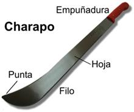
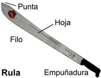
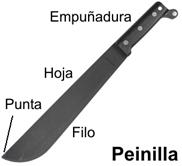

El Machete
Es básicamente un cuchillo grande, comúnmente mide menos de 60 cm y tiene un solo filo. Se utiliza para segar la hierba, cortar la caña y ramas no muy gruesas, podar plantas y abrirse paso en la selva.
Generalmente, el filo es muy agudo en el tercio de cuchilla más cercano a la punta.
La punta sobresale ligeramente por arriba del resto de la cuchilla. Por lo común su frente es curvo.
En Venezuela se conocen varias clases, siendo las más destacadas:
El “Charapo”, de origen andino, se caracteriza por su hoja ancha y curva, terminada en una punta muy pronunciada.
Por su robustez es adecuado para todo tipo de trabajos.
La “Rula”, también de origen andino, es más flexible y liviana, lo cual la hace más adecuada para abrirse paso en la selva o la montaña, segar la hierba o tareas similares.
También existe otro tipo de Rula cuyo frente es puntiagudo y se afila el tercio final de la cuchilla por ambas orillas. Esto lo hace aún más eficiente para cortar maleza y segar hierba.
La “Peinilla”, de origen militar, es el más pequeño, angosto y liviano de todos, lo cual lo hace ideal para abrirse camino entre la maleza; pero lo limita para el resto de las funciones propias de un machete.
Estas por lo general tiene una funda similar a la de un cuchillo común, y varian mucho en su forma, más que todo por algún fin más específico al que esté destinado (exploración , cacería, labores agrícolas, etc...).
Normas para el uso y mantenimiento del Machete
Las reglas de seguridad y conservación del Machete son prácticamente las mismas que para el Cuchillo… Claro está, que debes tomar en consideración el mayor tamaño y fortaleza de este último.
Eso mismo, te permite realizar tareas más pesadas y en menor tiempo; pero también requiere más dedicación para su limpieza, lubricación y afilado.